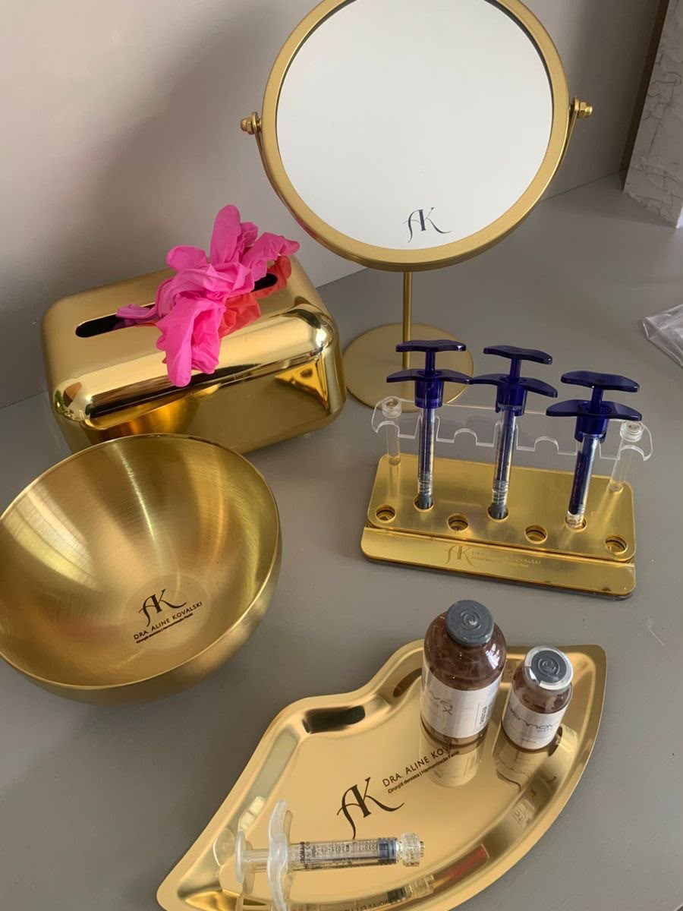

RITUALES
Protocolos de cuidado diseñados para una experiencia relajante y personalizada.
COSMETOLOGÍA · CUIDADO · BIENESTAR
Un espacio de belleza premium donde la tecnología, el cuidado y la experiencia se encuentran en una atmósfera de calma.
EXPLORAR ↓
01 / EXPERIENCIA
Protocolos de cuidado diseñados para una experiencia relajante y personalizada.
Herramientas profesionales integradas en un entorno limpio y sofisticado.
Un enfoque que prioriza el confort, la higiene y el acompañamiento profesional.
02 / GALERÍA
03 / APRENDER
Aprender sobre cuidado cosmético también significa entender la importancia de la higiene, la constancia y la orientación profesional.
La cosmetología reúne prácticas de cuidado estético, higiene y bienestar. Los procedimientos deben adaptarse a cada persona.
La limpieza y desinfección son esenciales para mantener un entorno seguro durante los servicios cosméticos.
Considera las características y necesidades de cada persona antes de elegir una rutina o servicio.
Un cosmetólogo capacitado conoce los equipos, los productos y las contraindicaciones de cada tratamiento, lo que reduce riesgos y mejora los resultados para el cliente.
Cada textura, cada aroma y cada gesto de cuidado forman parte de un proceso pensado para el bienestar de la piel y la confianza de quien la recibe.
LILACÉ · COSMETOLOGÍA PREMIUM
04 / LILACÉ
Ciencia, cuidado y estética en una experiencia visual, limpia y dinámica.
Activa el video, explora los controles y usa esta zona como referencia visual de la temática.
Cinco pasos que ordenan cualquier protocolo de cuidado facial profesional, del más simple al más completo.
Retira impurezas, maquillaje y exceso de sebo sin alterar la barrera cutánea.
Equilibra el pH de la piel y prepara la superficie para absorber mejor los siguientes pasos.
Concentrado de activos específicos: hidratación profunda, luminosidad o control según cada piel.
Sella el agua en la piel y mantiene la elasticidad durante todo el día.
El paso que más previene el envejecimiento: ningún ritual está completo sin él.
Tiende a la tirantez y descamación. Necesita hidratación intensa y evitar limpiadores agresivos.
Produce exceso de sebo y brillo. Se beneficia de fórmulas ligeras y limpieza constante sin resecar.
Combina zonas grasas (zona T) y secas. Requiere cuidado diferenciado por área del rostro.
Reacciona con facilidad a productos nuevos. Prioriza fórmulas hipoalergénicas y sin fragancia.
04 / TEXTOS Y PREGUNTAS
Textos bilingües sobre tratamientos, equipos y bioseguridad, con preguntas de comprensión.
La limpieza facial profunda es uno de los tratamientos más importantes en cosmetología y cosmiatría, ya que ayuda a mantener la piel sana y libre de impurezas. Su objetivo es eliminar células muertas, exceso de grasa, residuos de maquillaje y contaminantes acumulados en los poros.
El procedimiento suele comenzar con la desmaquillada y la limpieza de la piel. Luego se realiza una exfoliación para retirar las células muertas, seguida de vapor o productos emolientes que facilitan la extracción de comedones (puntos negros y blancos). Finalmente, se aplican mascarillas, tónicos, sueros y protector solar para hidratar, calmar y proteger la piel.
La limpieza facial profunda mejora la textura de la piel, previene la aparición de acné y favorece la absorción de los productos cosméticos. Para conservar sus beneficios, se recomienda realizar este procedimiento de forma periódica según el tipo de piel de cada persona.
Deep facial cleansing is one of the most important treatments in cosmetology and cosmiatry because it helps keep the skin healthy and free of impurities. Its main purpose is to remove dead skin cells, excess oil, makeup residue, and pollutants trapped in the pores.
The procedure usually begins with cleansing the skin and removing makeup. This is followed by exfoliation to eliminate dead skin cells, steam or softening products to facilitate blackhead extraction, and finally the application of masks, toners, serums, and sunscreen to hydrate, soothe, and protect the skin.
Deep facial cleansing improves skin texture, helps prevent acne, and enhances the absorption of cosmetic products. To maintain its benefits, the treatment should be performed regularly according to each person's skin type.
1. ¿Cuál es el principal objetivo de una limpieza facial profunda?
2. ¿Por qué se realiza una exfoliación durante la limpieza facial?
3. (English) What is the main purpose of a deep facial cleansing?
4. ¿Qué tipo de piel requiere mayor cuidado al elegir los productos de limpieza?
5. ¿Cuál es un beneficio de realizar limpiezas faciales de forma regular?
Los tratamientos corporales son procedimientos destinados a mejorar la apariencia y el bienestar de la piel y los tejidos del cuerpo. Entre los más utilizados se encuentran la exfoliación corporal, los masajes reductores, los drenajes linfáticos, las envolturas con productos cosméticos y los tratamientos reafirmantes.
Estos procedimientos buscan estimular la circulación sanguínea, favorecer la eliminación de líquidos retenidos, mejorar la elasticidad de la piel y complementar hábitos saludables como una alimentación equilibrada y la actividad física. Es importante recordar que los tratamientos estéticos no sustituyen un estilo de vida saludable, sino que actúan como un apoyo para mejorar los resultados.
Antes de realizar cualquier tratamiento corporal, el profesional debe evaluar el estado de salud del paciente, identificar posibles contraindicaciones y seleccionar el procedimiento más adecuado para sus necesidades.
Body aesthetic treatments are procedures designed to improve the appearance and health of the skin and body tissues. The most common treatments include body exfoliation, reducing massages, lymphatic drainage, body wraps, and firming therapies.
These procedures aim to stimulate blood circulation, reduce fluid retention, improve skin elasticity, and complement healthy habits such as balanced nutrition and regular exercise. It is important to remember that aesthetic treatments do not replace a healthy lifestyle but rather support better results.
Before performing any body treatment, the professional must evaluate the client's health condition, identify possible contraindications, and choose the most appropriate procedure.
1. ¿Cuál es el objetivo principal de los tratamientos corporales?
2. Antes de realizar un tratamiento corporal, el profesional debe:
3. (English) What should a professional do before performing a body treatment?
4. ¿Por qué es importante conocer el historial de salud del cliente antes de un tratamiento corporal?
5. ¿Qué objetivo tienen la mayoría de los tratamientos corporales estéticos?
La tecnología ha transformado la cosmetología y la cosmiatría mediante el uso de equipos especializados que permiten realizar tratamientos más precisos y seguros. Entre los equipos más utilizados se encuentran la alta frecuencia, el ultrasonido, la radiofrecuencia, la microdermoabrasión, la luz LED y la corriente galvánica.
Cada equipo tiene una función específica. La alta frecuencia ayuda a controlar bacterias y mejorar la oxigenación de la piel; el ultrasonido favorece la penetración de principios activos; la radiofrecuencia estimula la producción de colágeno y elastina; mientras que la microdermoabrasión elimina células muertas y mejora la textura cutánea.
El uso de esta maquinaria requiere capacitación profesional, ya que una aplicación incorrecta puede provocar irritaciones, quemaduras o resultados no deseados. Además, siempre deben respetarse las normas de bioseguridad y las indicaciones del fabricante.
Technology has transformed cosmetology and cosmiatry through the use of specialized equipment that allows treatments to be more accurate and effective. The most commonly used devices include high-frequency machines, ultrasound, radiofrequency, microdermabrasion, LED light therapy, and galvanic current.
Each device has a specific purpose. High frequency helps reduce bacteria and improve skin oxygenation; ultrasound enhances the absorption of active ingredients; radiofrequency stimulates collagen and elastin production; and microdermabrasion removes dead skin cells and improves skin texture.
These machines must be operated by trained professionals because incorrect use may cause irritation, burns, or unwanted results. Safety protocols and manufacturer instructions should always be followed.
1. ¿Qué función cumple la radiofrecuencia entre los equipos de estética?
2. ¿Por qué el uso de esta maquinaria requiere capacitación profesional?
3. (English) What is the purpose of ultrasound in aesthetic equipment?
4. ¿Qué precaución debe tenerse al utilizar equipos de estética sobre la piel?
5. ¿Cuál es el propósito principal de mantener los equipos correctamente calibrados?
La bioseguridad es un conjunto de normas y procedimientos destinados a proteger tanto al profesional como al paciente durante la realización de tratamientos estéticos. Su objetivo es prevenir infecciones, contaminación cruzada y otros riesgos relacionados con la práctica de la cosmetología y la cosmiatría.
Entre las medidas más importantes se encuentran el lavado correcto de manos, el uso de guantes cuando sea necesario, la desinfección y esterilización del instrumental, la limpieza de las superficies de trabajo y la correcta eliminación de residuos biológicos. También es indispensable realizar una valoración previa del paciente para identificar alergias, enfermedades de la piel o contraindicaciones.
El cumplimiento de las normas de bioseguridad garantiza tratamientos más seguros, protege la salud de todas las personas involucradas y fortalece la confianza entre el profesional y el paciente.
Biosafety is a set of rules and procedures designed to protect both the professional and the client during aesthetic treatments. Its purpose is to prevent infections, cross-contamination, and other risks associated with cosmetology and cosmiatry.
The most important measures include proper hand washing, wearing gloves when necessary, disinfecting and sterilizing instruments, cleaning work surfaces, and correctly disposing of biological waste. It is also essential to evaluate the client beforehand to identify allergies, skin conditions, or contraindications.
Following biosafety standards ensures safer treatments, protects everyone's health, and strengthens trust between the professional and the client.
1. ¿Cuál es el principal objetivo de la bioseguridad en cosmetología?
2. ¿Cuál de las siguientes acciones forma parte de las normas de bioseguridad?
3. (English) What is the main purpose of biosafety in cosmetology?
4. ¿Por qué es importante la esterilización de los materiales entre cada cliente?
5. ¿Qué elemento de protección personal es indispensable durante los procedimientos?